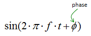
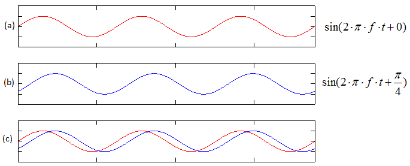
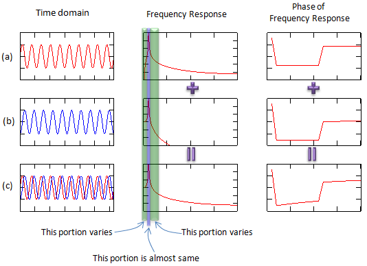
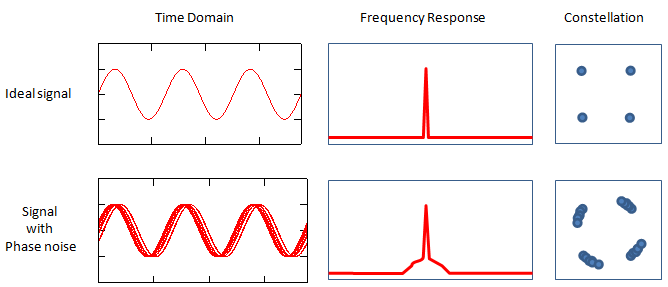
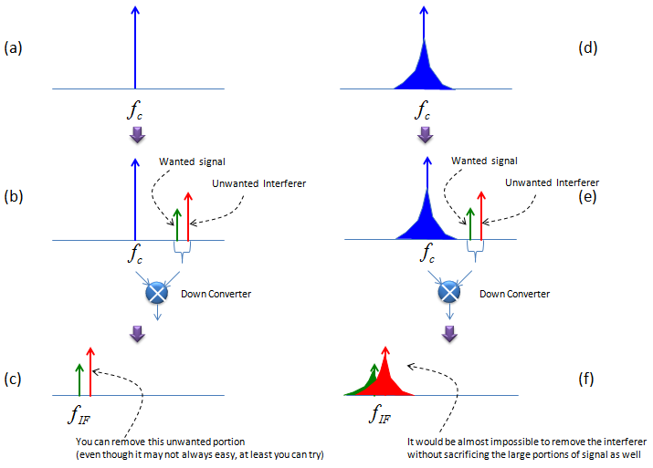
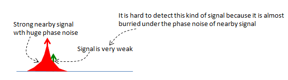

|
RF - Phase Noise Home : www.sharetechnote.com |
|
You can instateously realize that the Phase Noise is "Noise in terms of phase". Then what is Phase. Again, the mathematical definition of phase just come from high school math as shown below.

How would a signal changes when we changes the phase of the signal. Following plots would give you the answer. The red plot and blue plot has the same frequency and amplitude and the only difference is the phase. In plot (c), you would clearly see the difference. If you see a signal in time domain, the phase difference would result in the delay or advance of a signal.

Now let's think about how a signal would vary with phase in frequency domain. Look at the following three plots. The red plot (a) and blue plot (blue) has the same frequency and amplitude and the only difference is the phase. I already mentioned the time domain difference (left column), now let's look at the frequency domain difference (the center column). If you just focus on the peak point you would not find any obvious difference between the blue signal and red signal. But if you look closely into the region right next to the peak point, you would notice pretty outstanding difference between the blue signal and red signal.

Phase noise is a kind of noise of unexpected (unwanted) phase shift of a signal. In the description above, I compare only two signals but in reality the phase of the noised signal keep changing within a ceratain range. That's why we call it a noise. (If the phase get shifted to a certain value and remain the same all the time as in the example shown above, we would not call it a noise. it is just a phase shift which can easily corrected. I used a case with only two phase just for easy explanation).
Why phase noise is a problem ?
Why phase noise become a problem ? Let's look at a couple of problems which is caused by the phase noise and you will get some idea on why we want to avoid the phase noise.
The top row in the following plots shows a kind of idea signal which does not have any noise (not even phase noise). Look at the domain and frequency domain and I just assume that the signal is QAM modulated (If it is really QAM modulated, the time domain and frequency domain should be a little bit different, but let's just assume that everything is right). Then suppose that the signal is suffering from phase noise. If you plot the noised signal in time domain, you would get a plot shown in the second row. One thing you need to notice is that the frequency response. If a signal has phase noise, you would see the spreadind skirts at the bottom of the signal peak as shown below. And that phase noise would appear in the constellation as shown on the right side. You would see as if the constellation gets rotated.

Let's look at another problemetic situation caused by phase noise. Let's assume that your local oscillator in the reciever chain has the ideal frequency response as shown in (a) and gets under phase noise as shown in (d). Now this reciever chain is receiving a signal (wanted signal) and an interferer (unwanted signal) as shown in (b), (d). The signal and interferer goes through a down converter and problem starts here. When the local oscialltor signal does not have any phase noise, you can remove the most of interferer after the downconverter (e.g, by using filter) since they are separated from each other as shown in (c). But when your local oscillator has phase noise and the (signal + interferer) is downconverted by the noised local oscillator, the result would become as shown in (f). Since both signal and interferer frequency response got spreaded by the phase noise of local oscillator and the inteferer frequency response is overlapping the signal frequency response. In this case, it would be almost impossible to completely remove the interferer in analog stage (e.g, RF or IF stage). This is why the phase noise property of a local oscillator is so important.

There is another case where the phase noise become an issue. Let's suppose following situation. In this case, a very clean signal with a weak power is coming into the reciever and at the same time a strong signal with interferer is coming into the reciever at the same time, in that case even the signal (wanted signal) is clean it may be burried under the phase noise of nearby signal and will not be properly decoded.

|